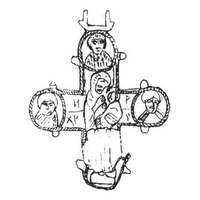

Catalog › CE-0729 · KOR2003-II.1.1.109
Fragment de valvă de revers de encolpion cu capete rotunjite „cu lacrimi”, Odighitria și sfinți bust
sec. sfârșit XII–XIII (1101–1300) · Sevastopol (Chersonesos), Crimeea, Ucraina
single valve of a reliquary cross, aramă; c. sfârșit XII–XIII (1101–1300); found at Sevastopol (Chersonesos), Crimeea, Ucraina.


Identificare
- Categorie
- Valvă izolată
- Material
- Aramă
- Tehnică
- Turnare în relief
- Stare
- Fragmentară
- Dimensiuni
- Î 100 × L 70 mm
Iconografie
- Revers
- Maica Domnului cu Pruncul; Neidentificat
- Descriere revers
- Fragment de valvă de revers a unui encolpion cu capete rotunjite cu „lacrimi”; capătul de jos pierdut. În centrul valvei imaginea în relief a Maicii Domnului Odighitria; pe capete, în medalioane, imagini bust în relief ale unor sfinți. Contururile valvei și ale medalioanelor sunt subliniate cu o bordură îngustă în relief cu crestături oblice.
- Inscripții
- Н/ХР Р/[ ] (pe capetele laterale, după descrierea săpătorilor)
Datare și atribuire
- Datare
- sec. sfârșit XII–XIII (1101–1300)
- Centru
- Necunoscut
- Tipologie
- Korzukhina–Peskova 2003, tip II 1 1
Descoperire
- Localitate
- Sevastopol (Chersonesos)
- Regiune
- Crimeea
- Țară
- Ucraina
- Context
- Așezare
- Anul
- 1940
Păstrare și referințe
- Bibliografie
- G. F. Korzukhina, A. A. Peskova, Древнерусские энколпионы. Нагрудные кресты-реликварии XI–XIII вв., Sankt-Petersburg, 2003 [Korzukhina–Peskova 2003], p. 73, cat. nr. II 1 1/109, reprodusă la Табл. 29 (planșe, p. 271). Bibliografie citată în sursă: Белов, Якобсон 1953 с. 138 (fără fotografie); Корзухина, архив ф. 77, д. 16, л. 16.
- Figura
- Табл. 29
- Planșe
- Korzukhina–Peskova 2003, Табл. 29 (planșă fără paginație proprie în PDF; p. 271 tipărită)
- Observații
- Datare după Peskova: sec. sfârșit XII–XIII. Circumstanțe: Săpături G. D. Belov și A. L. Iakobson, 1940; cartierul de nord, cartierul XVII, gospodăria I, încăperea 1, stratul sec. XIII. Dimensiuni: h 10,0 cm cu balamalele; dimensiuni aproximative (redacție). Locul de păstrare necunoscut. Datarea și dimensiunile sunt indicate de redacție (— Ред.). Inscripția este citată după descrierea autorilor săpăturilor. Coordonate: nu sunt date în sursă.
Citare: Corpus Encolpiorum, CE-0729, Fragment de valvă de revers de encolpion cu capete rotunjite „cu lacrimi”, Odighitria și sfinți bust, https://vitaliejosanu1979-ux.github.io/primul-meu-proiect/piese/KOR2003-II.1.1.109/ (accesat 2026-10-17).